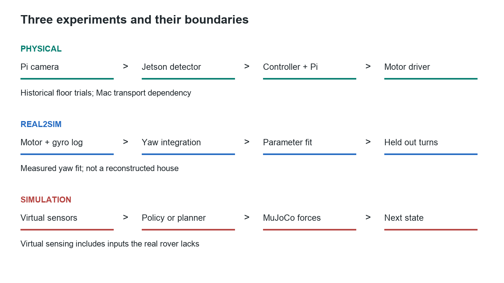
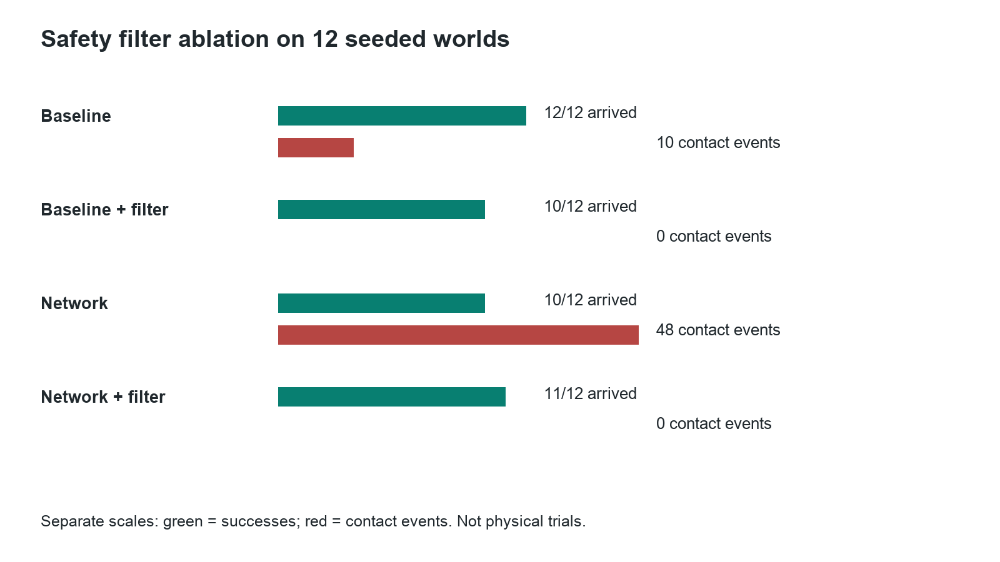

The evidence file did not load. Keep the complete learning folder together.
Three experiments, not one learned brain

What ran on the hardware
The Pi captured images and controlled GPIO. The Jetson ran a pretrained detector and explicit target-following logic. The motor drivers switched the motor battery. The MPU supplied angular-rate measurements. The Mac hosted a transport tunnel as well as the lab.
The Pi is currently out of service. The saved results are historical evidence, not a live connection.
What ran in simulation
MuJoCo integrated the four-wheel physics model. A separate 386-parameter network used nine numerical observations, not images. The mapping experiment used simulated ranges, estimated pose and rendered-image colour detection.
Not completed: physical metric mapping, house-wide search and validated learned-policy transfer.
From pixel coordinates to a steering error
Move a classroom box in a 640 by 360 image. These coordinates are supplied by you, not detected by YOLO. The geometry is the same calculation used by the rover.
Where 0.5 comes from
A positive error means the object is right of the image centre. It is not degrees and not a neural weight. Area and bottom edge are proximity clues, not measured distance.
Actual controller examples
These five results were exported from the real Python controller functions with defaults and assumed 0.8/1.0 motor calibration. They are independent of the geometry sliders and are not live device settings.
Inference and learning are different operations
The actual saved navigation network
Nine normalised inputs, 32 hidden tanh activations, two outputs. Change an input: weights stay fixed. Safety filtering is not applied in this inspector.
Inspect stored weights and activation values
Train one teaching weight
The small scalar model is prediction = weight * input. One step calculates the loss slope and subtracts a scaled slope from the weight.
Evidence from the real network
The exported gradient check changed all parameters in memory for one example. The accepted model file stayed unchanged. A lower loss on one example does not prove improved missions.
Does the simulator predict a measured turn?
These are three held-out physical turn endpoints. They were not the 530-sample fitting trajectory. Select a model and inspect the remaining error, not just the percentage improvement.

| Turn | Physical degrees | Predicted degrees | Error degrees |
|---|
The fit changed effective turning gains and velocity feedback. It did not measure every physical parameter or scan your room. The large remaining error on the second turn limits the model's accuracy claim.
What made simulated contact outcomes better?

These are simulated results on 12 worlds. The safety filter had a large effect. The original baseline versus network comparison changed both the policy and the filter, so it could not isolate learning.
Recorded MuJoCo physics and camera frames
This is playback of two predetermined engine runs, not live physics and not a real-house map. Both outcomes are retained, including failures. Start Run Simulation.command from the learning folder to run new physics experiments.
The navigation policy does not consume this image. Its inputs are the nine numerical observations below.
Green: simulated ground truth. Blue: estimated pose. Red circle: goal. Grey circles: generated obstacles.
Dynamics and sensor assumptions
Contact and stuck flags still use simulator information. The physical rover lacks corresponding metric range and speed measurements. This is not accepted Sim2Real transfer.
Make one claim reproducible each week
- Perception: explain every image transform; evaluate independent labelled images; report misses, false positives, near/far performance and Jetson latency.
- Dynamics: trace one MuJoCo step; change one parameter with a fixed seed; compare requested action, executed action and resulting motion.
- Learning: reproduce the finite-difference gradient check; train a separate model; compare baseline and network with matched safeguards.
- Transfer: analyse the saved physical turn residuals; write the missing-observation specification; do not call copying a model to Jetson a successful physical transfer.
Take the Jetson, its existing SD and proper power supply, Camera Module 3, the already-proven ribbon and your USB data cable. No new rover is needed to complete the first three weeks.
Open the full Word manual or read the versioned Markdown source.
What should you be able to explain aloud?
- How a frame becomes a box, a normalised error, a bounded command and a wheel response.
- Why a neural weight changes, and why one lower loss is not enough.
- What MuJoCo actually integrates and which model parameters are assumptions.
- Why endpoint validation and full-trajectory validation are different.
- Why virtual navigation is not evidence of physical house-wide autonomy.
External reading links are in the manual and need internet. This workbook, its evidence and the manual are local.